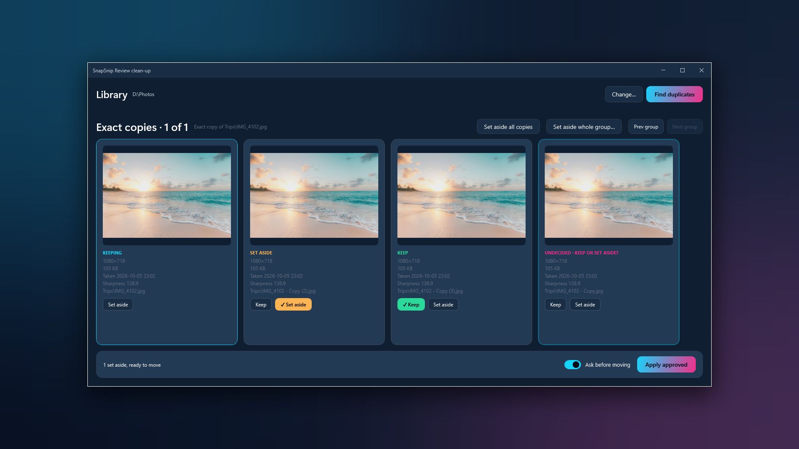
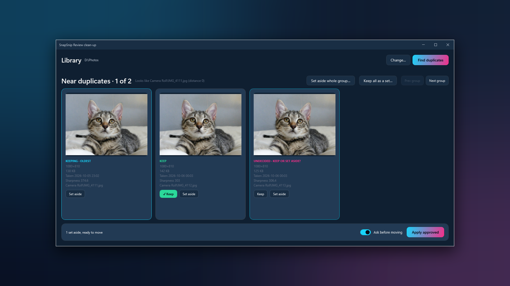
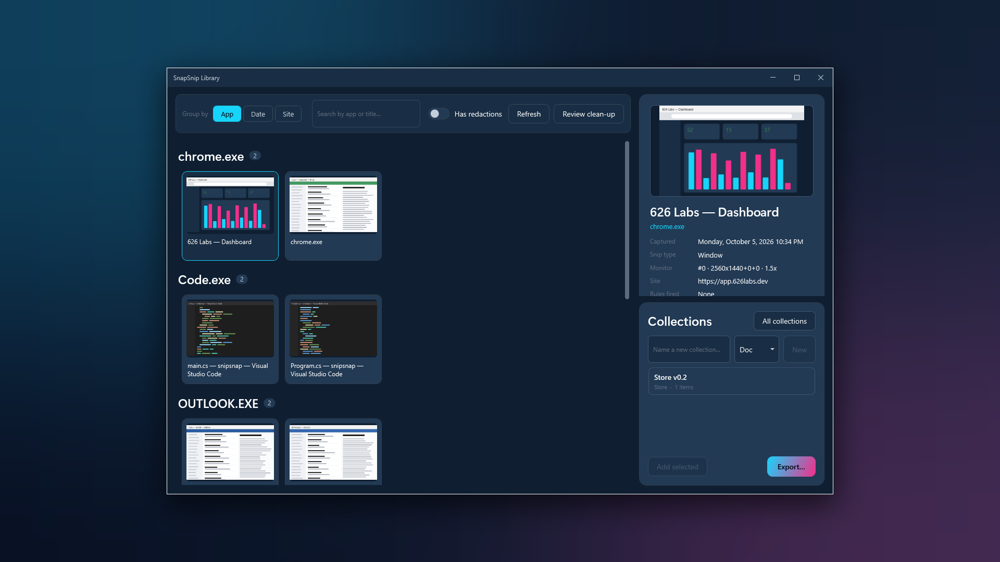
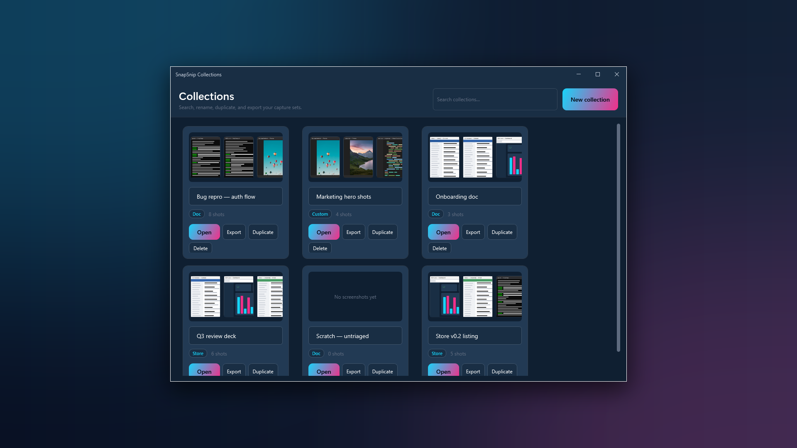
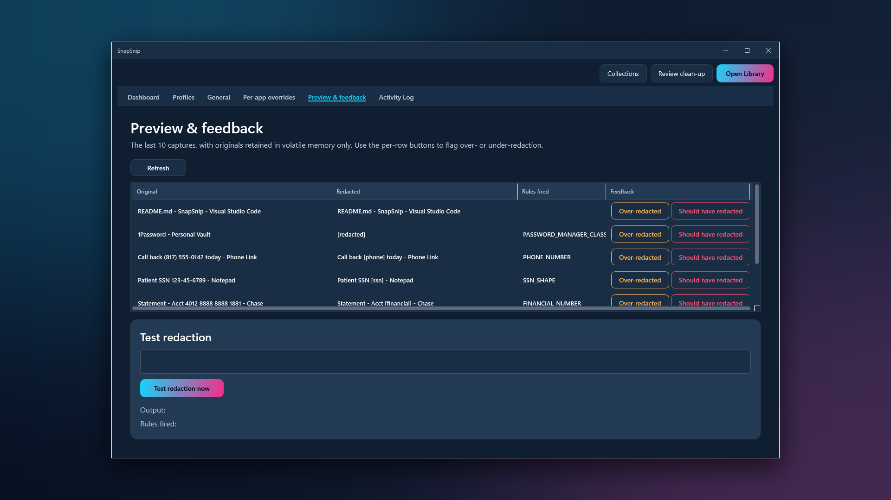
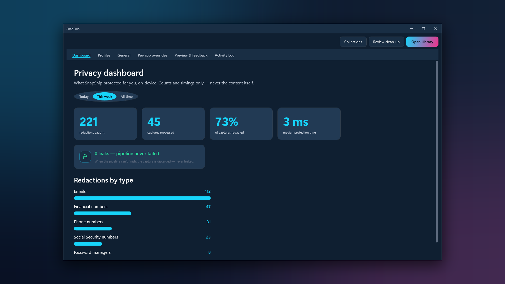

Windows 11 · Snipping Tool companion
SnapSnip
Every screenshot, named after the app and window it came from.
SnapSnip rides alongside Snipping Tool. Press Win+Shift+S or Print Screen as
always, and the capture is saved as something like
Outlook — Q3 forecast — 2026-04-29 142301.png, with window titles redacted on
your machine first.
- Latest v0.3.0
- Windows 11 22H2+
- License MIT
- Price Free
A folder of Screenshot 2026-04-29 142301.png
Every capture Snipping Tool saves gets a name like Screenshot 2026-04-29 142301.png:
no app, no window, no context. A month later the folder is a few hundred files that all look
the same from the outside, and the one you need is somewhere in the middle.
SnapSnip reattaches that context at capture time, from the window's own metadata and never from the image, and embeds it as structured XMP that file search, ExifTool and your own scripts can read without parsing filenames.
Your screenshot folder becomes something you can search, not a graveyard.
Named, redacted, found, cleaned up
Snipping Tool is unchanged. SnapSnip works on what it saves.
Named at capture
Win+Shift+S or Print Screen, and the file is named for the app and window it came from. The same context is embedded as XMP metadata that any XMP-aware tool can read.
Redaction comes first
Window titles can carry customer names, ticket numbers and document titles. Three preset policies, Strict, Balanced and Permissive, plus per-app overrides: trust your code editor, lock down your password manager.
Profiles and a preview
One-click Redaction Profiles for how you work: Developer, Healthcare, Finance, Streamer. A side-by-side preview shows exactly what was redacted and what wasn't, before you rely on it.
Library and Collections
Browse every screenshot by the app and window it came from, and gather the right ones into named Collections for a doc, a deck or a Store listing. Collections export copies; your originals stay where they are.
Review clean-up
SnapSnip finds exact copies, near copies and blurry photos in a folder you choose. You decide each one, or keep a burst together as a set. Set-aside files move into a _review folder. Nothing is deleted, and every run can be undone.
Fail-closed
If redaction ever errors, the capture still saves, with a timestamp-only filename, never an unredacted title.
See it work






How it's built
A Windows tray app that listens for the capture keys, reads the window at that moment, and writes the name and the metadata before the file settles.
The tray app
Settings, the Library, Review and the Privacy Dashboard, with dark and light themes that follow Windows. .NET 10 ships inside the package.
The keyboard hook
A low-level hook that notices Win+Shift+S and Print Screen and snapshots the foreground window's app and title at that instant.
A frozen metadata schema
The context is written as a published, frozen v1 XMP schema: a public contract, so any XMP-aware tool can read it.
The library index
A local index of your screenshots that powers the Library, Collections and duplicate finding. It lives on your PC with everything else.
What leaves your machine: nothing
_review folder, and every run can be undone. Collections export copies and never move the originals.Where it ended up
Every Microsoft Store install since launch, plotted by country. Dot area is proportional to install count.